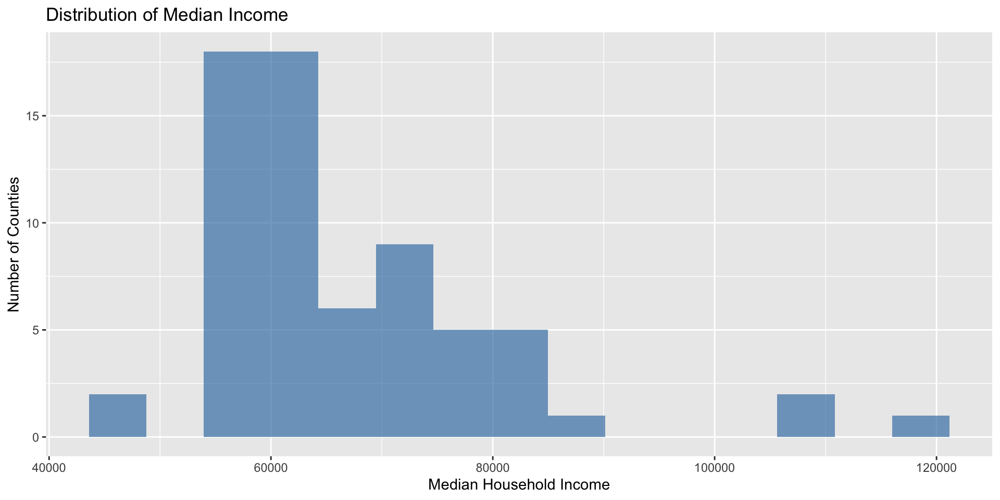
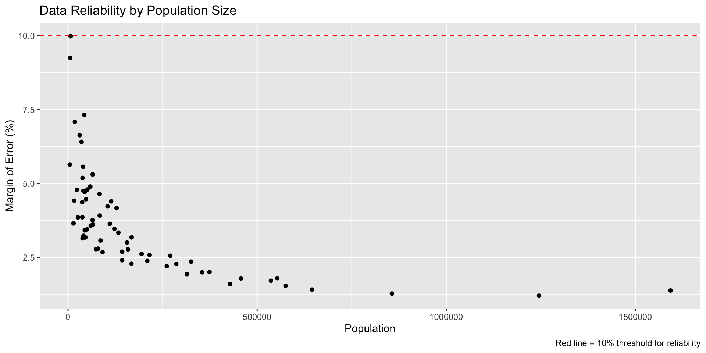

Data Visualization & Exploratory Analysis
Week 3: MUSA 5080
Today’s Agenda
What We’ll Cover
Part 1: Why Visualization Matters
- Anscombe’s Quartet and the limits of summary statistics
- Visualization in policy context
- Connection to algorithmic bias and data ethics
Part 2: Grammar of Graphics
- ggplot2 fundamentals
- Aesthetic mappings and geoms
- Live demonstration
Part 3: Exploratory Data Analysis
- EDA workflow and principles
- Understanding distributions and relationships
- Critical focus: Data quality and uncertainty
Part 4: Data Joins & Integration
- Combining datasets with dplyr joins
Part 5: Hands-On Lab
- Guided practice with census data
- Create publication-ready visualizations
- Practice ethical data communication
Part 1: Why Visualization Matters
Opening Question
Think about Assignment 1:
You created tables showing income reliability patterns across counties. But what if you needed to present these findings to:
- The state legislature (2-minute briefing)
- Community advocacy groups
- Local news reporters
Discussion: How might visual presentation change the impact of your analysis?
Anscombe’s Quartet: The Famous Example
Four datasets with identical summary statistics:
- Same means (x̄ = 9, ȳ = 7.5)
- Same variances
- Same correlation (r = 0.816)
- Same regression line
But completely different patterns when visualized
The Policy Implications
Why this matters for your work:
- Summary statistics can hide critical patterns
- Outliers may represent important communities
- Relationships aren’t always linear
- Visual inspection reveals data quality issues
Example: A county with “average” income might have extreme inequality that algorithms would miss without visualization.
Connecting Week 2: Ethical Data Communication
From last week’s algorithmic bias discussion:
Research finding: Only 27% of planners warn users about unreliable ACS data - Most planners don’t report margins of error - Many lack training on statistical uncertainty - This violates AICP Code of Ethics
Your responsibility:
- Create honest, transparent visualizations
- Always assess and communicate data quality
- Consider who might be harmed by uncertain data
Bad Visualizations Have Real Consequences
Common problems in government data presentation:
- Misleading scales or axes
- Cherry-picked time periods
- Hidden or ignored uncertainty
- Missing context about data reliability
Real impact: The Jurjevich et al. study found that 72% of Portland census tracts had unreliable child poverty estimates, yet planners rarely communicated this uncertainty.
Result: Poor policy decisions based on misunderstood data
Part 2: Grammar of Graphics
The ggplot2 Philosophy
Grammar of Graphics principles:
Data → Aesthetics → Geometries → Visual
- Data: Your dataset (census data, survey responses, etc.)
- Aesthetics: What variables map to visual properties (x, y, color, size)
- Geometries: How to display the data (points, bars, lines)
- Additional layers: Scales, themes, facets, annotations
Basic ggplot2 Structure
Every ggplot has this pattern:
ggplot(data = your_data) + aes(x = variable1, y = variable2) + geom_something() + additional_layers()
You build plots by adding layers with +
Live Demo: Basic Scatter Plot
Aesthetic Mappings: The Key to ggplot2
Aesthetics map data to visual properties:
x,y- positioncolor- point/line colorfill- area fill color
size- point/line sizeshape- point shapealpha- transparency
Important: Aesthetics go inside aes(), constants go outside
Improving Plots with Labels and Themes

Part 3: Exploratory Data Analysis
The EDA Mindset
Exploratory Data Analysis is detective work:
- What does the data look like? (distributions, missing values)
- What patterns exist? (relationships, clusters, trends)
- What’s unusual? (outliers, anomalies, data quality issues)
- What questions does this raise? (hypotheses for further investigation)
- How reliable is this data?
Goal: Understand your data before making decisions or building models
EDA Workflow with Data Quality Focus
Enhanced process for policy analysis:
- Load and inspect - dimensions, variable types, missing data
- Assess reliability - examine margins of error, calculate coefficients of variation
- Visualize distributions - histograms, boxplots for each variable
- Explore relationships - scatter plots, correlations
- Identify patterns - grouping, clustering, geographical patterns
- Question anomalies - investigate outliers and unusual patterns
- Document limitations - prepare honest communication about data quality
Understanding Distributions
Why distribution shape matters:

What to look for: Skewness, outliers, multiple peaks, gaps
Boxplots!

Critical: Data Quality Through Visualization
Research insight: Most planners don’t visualize or communicate uncertainty

Pattern: Smaller populations have higher uncertainty Ethical implication: These communities might be systematically undercounted
Research-Based Recommendations for Planners
Jurjevich et al. (2018): 5 Essential Guidelines for Using ACS Data
- Report the corresponding MOEs of ACS estimates - Always include margin of error values
- Include a footnote when not reporting MOEs - Explicitly acknowledge omission
- Provide context for (un)reliability - Use coefficient of variation (CV):
- CV < 12% = reliable (green coding)
- CV 12-40% = somewhat reliable (yellow)
- CV > 40% = unreliable (red coding)
- Reduce statistical uncertainty - Collapse data detail, aggregate geographies, use multi-year estimates
- Always conduct statistical significance tests when comparing ACS estimates over time
Key insight: These practices are not just technical best practices—they are ethical requirements under the AICP Code of Ethics
EDA for Policy Analysis
Key questions for census data:
- Geographic patterns: Are problems concentrated in certain areas?
- Population relationships: How does size affect data quality?
- Demographic patterns: Are certain communities systematically different?
- Temporal trends: How do patterns change over time?
- Data integrity: Where might survey bias affect results?
- Reliability assessment: Which estimates should we trust?
Part 4: Data Joins & Integration
Why Join Data?
To combining datasets of course:
- Census demographics + Economic indicators
- Survey responses + Geographic boundaries
- Current data + Historical trends
- Administrative records + Survey data
Types of Joins (tabular)
Four main types in dplyr:
left_join()- Keep all rows from left datasetright_join()- Keep all rows from right dataset
inner_join()- Keep only rows that match in bothfull_join()- Keep all rows from both datasets
Most common: left_join() to add columns to your main dataset
Live Demo: Joining Census Tables
# A tibble: 6 × 6
GEOID NAME median_income income_moe college_pop college_moe
<chr> <chr> <dbl> <dbl> <dbl> <dbl>
1 42001 Adams County, Pennsylv… 78975 3334 10195 761
2 42003 Allegheny County, Penn… 72537 869 229538 3311
3 42005 Armstrong County, Penn… 61011 2202 6171 438
4 42007 Beaver County, Pennsyl… 67194 1531 22588 1012
5 42009 Bedford County, Pennsy… 58337 2606 3396 307
6 42011 Berks County, Pennsylv… 74617 1191 50120 1654Checking Join Results and Data Quality
Always verify joins AND assess combined reliability:
Income data rows: 67 Education data rows: 67 Combined data rows: 67 # A tibble: 1 × 2
missing_income missing_education
<int> <int>
1 0 0# A tibble: 6 × 3
NAME income_cv college_cv
<chr> <dbl> <dbl>
1 Adams County, Pennsylvania 4.22 7.46
2 Allegheny County, Pennsylvania 1.20 1.44
3 Armstrong County, Pennsylvania 3.61 7.10
4 Beaver County, Pennsylvania 2.28 4.48
5 Bedford County, Pennsylvania 4.47 9.04
6 Berks County, Pennsylvania 1.60 3.30Part 5: Hands-On Lab Introduction
Lab Structure for Today
You’ll work through six exercises:
- Finding Census Variables - Learn to search for the data you need
- Single Variable EDA - Explore distributions and identify outliers
- Two Variable Relationships - Create meaningful scatter plots
- Data Quality Visualization - Practice ethical uncertainty communication
- Multiple Variables - Color, faceting, and complex relationships
- Data Integration - Join datasets and create publication-ready visualizations
Skills You’ll Practice
ggplot2 fundamentals:
- Scatter plots, histograms, boxplots
- Aesthetic mappings and customization
- Professional themes and labels
EDA workflow:
- Distribution analysis
- Outlier detection
- Pattern identification
Ethical data practice:
- Visualizing and reporting margins of error
- Using coefficient of variation to assess reliability
Connection to Professional Ethics
By the end of today, you’ll be able to:
- Visually assess data quality issues
- Create compelling presentations of demographic patterns
- Communicate statistical uncertainty ethically and clearly
- Integrate multiple data sources
Getting Started
Questions Before We Begin?
Ready for hands-on practice?
Remember: Today’s skills build directly on Week 1-2 foundations:
- Same dplyr functions, now with visualization
- Same census data concepts, now with multiple tables
Let’s create some beautiful graphs